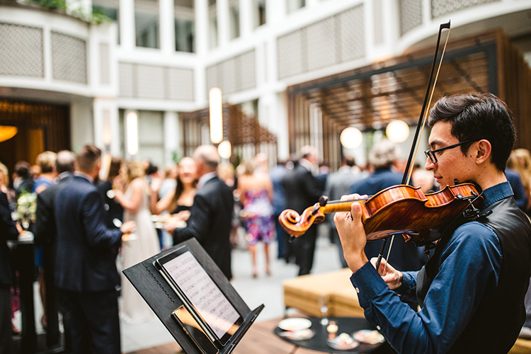

Solo violin is a beautiful option for everything from the most intimate gatherings to larger weddings with over 100 people.
A versatile instrument that can play soaring melodies as well as harmonies at the same time.

Violin and Cello Duo
Solo violin is a beautiful option for everything from the most intimate gatherings to larger weddings with over 100 people.
A versatile instrument that can play soaring melodies as well as harmonies at the same time.